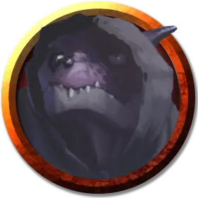

Кобольд подчиненный
Kobold Underling
Маленький Гуманоид (Кобольд), законно-злой

Класс Доспеха 13
Хиты 7 (3к6 - 3)
Скорость 30 футов
| мод | спас | ||
|---|---|---|---|
| СИЛ | 7 | −2 | −2 |
| ЛОВ | 16 | +3 | +3 |
| ТЕЛ | 9 | −1 | −1 |
| мод | спас | ||
|---|---|---|---|
| ИНТ | 8 | −1 | −1 |
| МДР | 9 | −1 | −1 |
| ХАР | 8 | −1 | −1 |
Чувства тёмное зрение 60 футов, пассивное Восприятие 9
Языки Общий, Драконий
Опасность 1/8 (25 опыта)
Бонус мастерства +2
Особенности
Неопрятная смерть. Кобольд взрывается через 3 раунда после смерти или сразу же, если он был убит критическим попаданием. Взрыв разрушает тело кобольда, разбрасывая его снаряжение по земле. Каждое существо в пределах 5 футов от взрывающегося кобольда должно совершить спасбросок Ловкости Сл 10, при провале получая 4 (1к8) дробящего урона или половину этого урона при успехе.
Тактика стаи. Кобольд совершает с преимуществом броски атаки по существу, если в пределах 5 футов от этого существа находится как минимум один дееспособный союзник кобольда.
Чувствительность к солнечному свету. Находясь на солнечном свету, кобольд совершает с помехой броски атаки, а также проверки Мудрости (Восприятие), полагающиеся на зрение.
Действия
Короткий меч. Рукопашная атака оружием: +5 к попаданию, досягаемость 5 фт., одна цель. Попадание: 6 (1к6 + 3) колющего урона.
Ручной арбалет. . Дальнобойная атака оружием: +5 к попаданию, дистанция 30/120 фт., одна цель. Попадание: 6 (1к6 + 3) колющего урона.
Описание
Кобольды - трусливые гуманоиды-рептилии, которые обычно наводняют подземелья. Они компенсируют свою физическую неумелость умением устраивать ловушки.